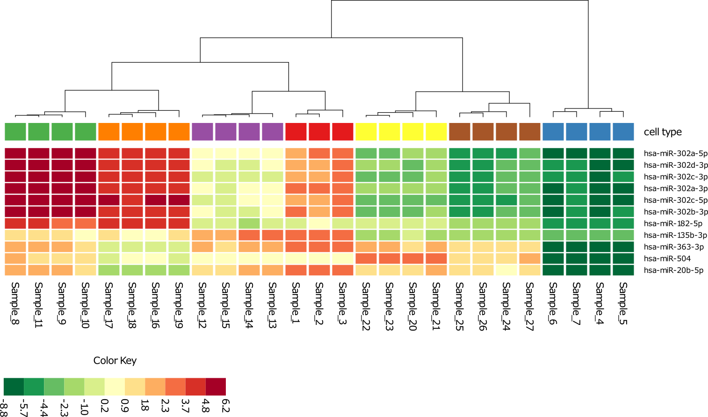

Features of the Amberbio app
Mobile data analysis
The Amberbio app performs all calculations and visualizations on the mobile device. The data is always available and can be visualized and analyzed in real time during meetings for example.Types of data
Data sets consist of samples, molecules, and measurements for each molecule-sample pair. Missing values are allowed. Various types of data can be analyzed in the app such as mRNA gene expression, protein abundances, or microRNA abundance. Even data sets of a non-biological origin can be used.Experimental origin of data
Data from any experimental origin can be analyzed including microarrays, sequencing, qPCR, mass spectrometry, and 2D gels.Simple user interface
The user interface is touch based and can be used without training. Each page in the app has an info button which provides additional information.Import
New data sets can be imported from tab or comma separated files. Files can be imported through email, or through cloud storage providers such as iCloud, Dropbox, or Box.Export
Tables and figures can be exported by email or through cloud storage providers. The simple export methods make it easy to view figures on a large screen if needed.Backup
Projects can be exported to a database file that can be used for backup and transfer to other devices. The database files make it easy to transfer data to collaborators.Statistical tests
The app can perform t-tests, Mann-Whitney tests, ANOVA tests, paired t-tests, and linear regression.Visualizations
The data can be visualized in various ways giving the user a better understanding of the data.Unsupervised classification
The app can perform 2D and 3D principal component analysis, hierarchical clustering, and heat maps. Various options can be chosen interactively.Creation of new data sets
The app can produce new derived data sets by normalization, logarithmic transformation, sample removal, molecule removal, or selection of molecules from a table.Missing values
The app contains histograms of missing values for the samples. The histograms can be ordered in various ways.Figures
The app can produce various customizable color figures. The figures can be exported to either pdf or png files.Tables
The app can display tables of molecules. Tables can be sorted, searched, and exported to txt files.Screen shots
Screen shots of the app showing some of the features can be found on screen shots.
